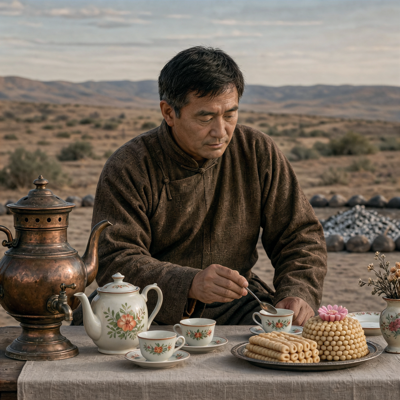
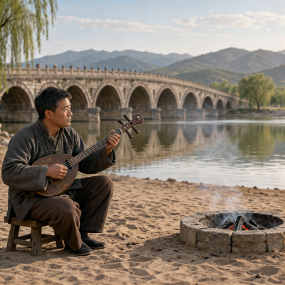
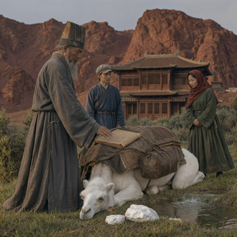
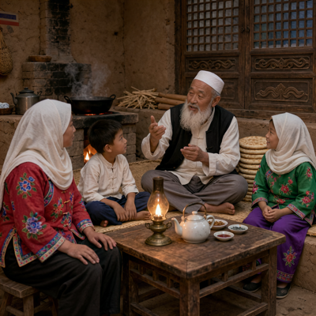
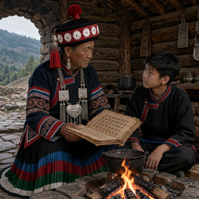
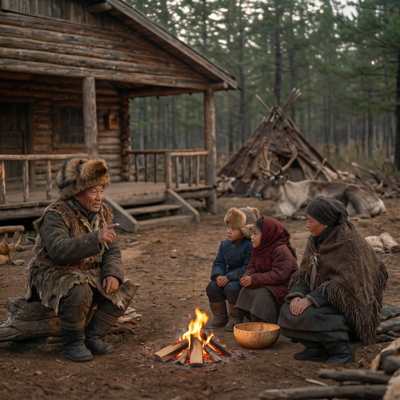
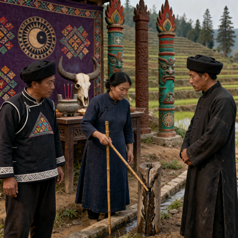

十大雅集 / 山河谣叙
I
山河谣叙
民间文学
收录国家级代表性项目 167 项、251 子项，申报地区涉及 30 个省级行政区，另有中直单位申报的 1 子项。子项最多的地区：山东省（27）、浙江省（24）、湖北省（21）。
项目档案库
167 项、251 子项
（本页配图如无特别标注，均为 AI 生成的示意图，非实拍。）
第 3 / 3 页（I-121 至 I-167）
- I-121
阿细先基
- 云南省弥勒县2011 第三批 · 新增项目官方页 →
- I-122
羌戈大战
- 四川省汶川县2011 第三批 · 新增项目官方页 →
- I-123
恰克恰克

- 新疆维吾尔自治区伊宁市2011 第三批 · 新增项目官方页 →
- I-124
酉阳古歌
- 重庆市酉阳土家族苗族自治县2011 第三批 · 新增项目官方页 →
- I-125
- I-126
卢沟桥传说

- 北京市丰台区2014 第四批 · 新增项目官方页 →
- I-127
鬼谷子传说
- 河北省临漳县2014 第四批 · 新增项目官方页 →
- I-128
东海孝妇传说
- 江苏省连云港市2014 第四批 · 新增项目官方页 →
- I-129
刘阮传说
- 浙江省天台县2014 第四批 · 新增项目官方页 →
- I-130
- I-131
- I-132
陈三五娘传说
- 福建省泉州市洛江区2014 第四批 · 新增项目官方页 →
- I-133
胡峄阳传说
- 山东省青岛市城阳区2014 第四批 · 新增项目官方页 →
- I-134
孟母教子传说
- 山东省邹城市2014 第四批 · 新增项目官方页 →
- I-135
河图洛书传说
- 河南省洛阳市2014 第四批 · 新增项目官方页 →
- I-136
杞人忧天传说
- 河南省杞县2014 第四批 · 新增项目官方页 →
- I-137
三国传说
- 湖北省2014 第四批 · 新增项目官方页 →
- I-138
伯牙子期传说
- 湖北省武汉市2014 第四批 · 新增项目官方页 →
- I-139
尹吉甫传说
- 湖北省房县2014 第四批 · 新增项目官方页 →
- I-140
苏仙传说
- 湖南省郴州市苏仙区2014 第四批 · 新增项目官方页 →
- I-141
毕阿史拉则传说
- 四川省金阳县2014 第四批 · 新增项目官方页 →
- I-142
- I-143
骆驼泉传说

- 青海省循化撒拉族自治县2014 第四批 · 新增项目官方页 →
- I-144
回族民间故事

- 宁夏回族自治区泾源县2014 第四批 · 新增项目官方页 →
- I-145
广禅侯故事
- 山西省阳城县2014 第四批 · 新增项目官方页 →
- I-146
解缙故事
- 江西省吉水县2014 第四批 · 新增项目官方页 →
- I-147
壮族百鸟衣故事
- 广西壮族自治区横县2014 第四批 · 新增项目官方页 →
- I-148
阿凡提故事
- 新疆维吾尔自治区喀什地区2014 第四批 · 新增项目官方页 →
- I-149
广阳镇民间故事
- 重庆市南岸区2014 第四批 · 新增项目官方页 →
- I-150
西王母神话
- 新疆维吾尔自治区阜康市2014 第四批 · 新增项目官方页 →
- I-151
盘王大歌
- 湖南省江华瑶族自治县2014 第四批 · 新增项目官方页 →
- I-152
玛牧

- 四川省喜德县2014 第四批 · 新增项目官方页 →
- I-153
黑白战争
- 云南省丽江市古城区2014 第四批 · 新增项目官方页 →
- I-154
祁家延西
- 青海省互助土族自治县2014 第四批 · 新增项目官方页 →
- I-155
常山喝彩歌谣
- 浙江省常山县2014 第四批 · 新增项目官方页 →
- I-156
八大处传说
- 北京市石景山区2021 第五批 · 新增项目官方页 →
- I-157
玄奘传说
- 河南省洛阳市偃师区2021 第五批 · 新增项目官方页 →
- I-158
女娲传说
- 湖北省十堰市竹山县2021 第五批 · 新增项目官方页 →
- I-159
老司城传说
- 湖南省湘西土家族苗族自治州永顺县2021 第五批 · 新增项目官方页 →
- I-160
珠玑巷人南迁传说
- 广东省韶关市南雄市2021 第五批 · 新增项目官方页 →
- I-161
张骞传说
- 陕西省汉中市城固县2021 第五批 · 新增项目官方页 →
- I-162
藏族民间传说
- 藏族民间传说（年保玉则传说）青海省果洛藏族自治州久治县2021 第五批 · 新增项目官方页 →
- I-163
鄂温克族民间故事

- 内蒙古自治区呼伦贝尔市鄂温克族自治旗2021 第五批 · 新增项目官方页 →
- I-164
包公故事
- 安徽省合肥市2021 第五批 · 新增项目官方页 →
- I-165
仫佬族古歌
- 广西壮族自治区河池市罗城仫佬族自治县2021 第五批 · 新增项目官方页 →
- I-166
巴狄雄萨滚
- 贵州省铜仁市松桃苗族自治县2021 第五批 · 新增项目官方页 →
- I-167
都玛简收

- 云南省红河哈尼族彝族自治州绿春县2021 第五批 · 新增项目官方页 →
名录数据来源：中国非物质文化遗产网